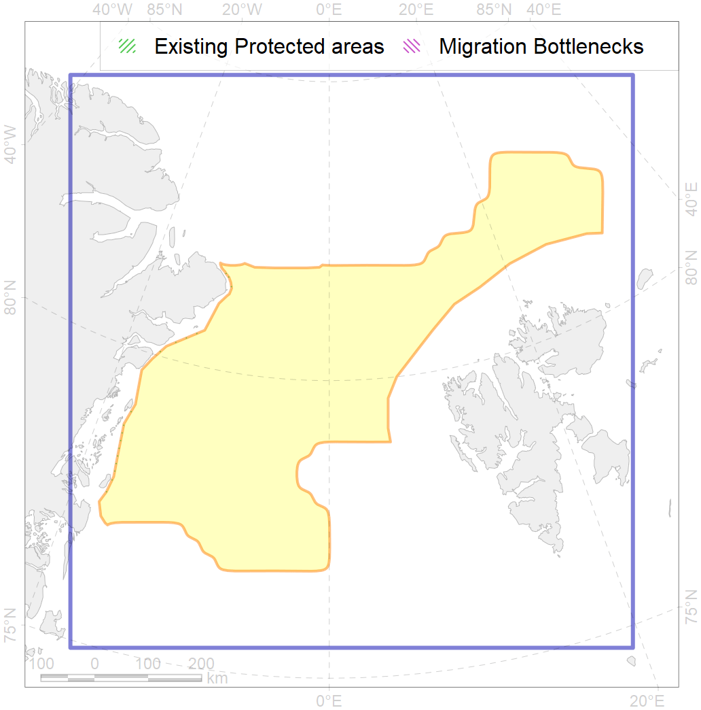
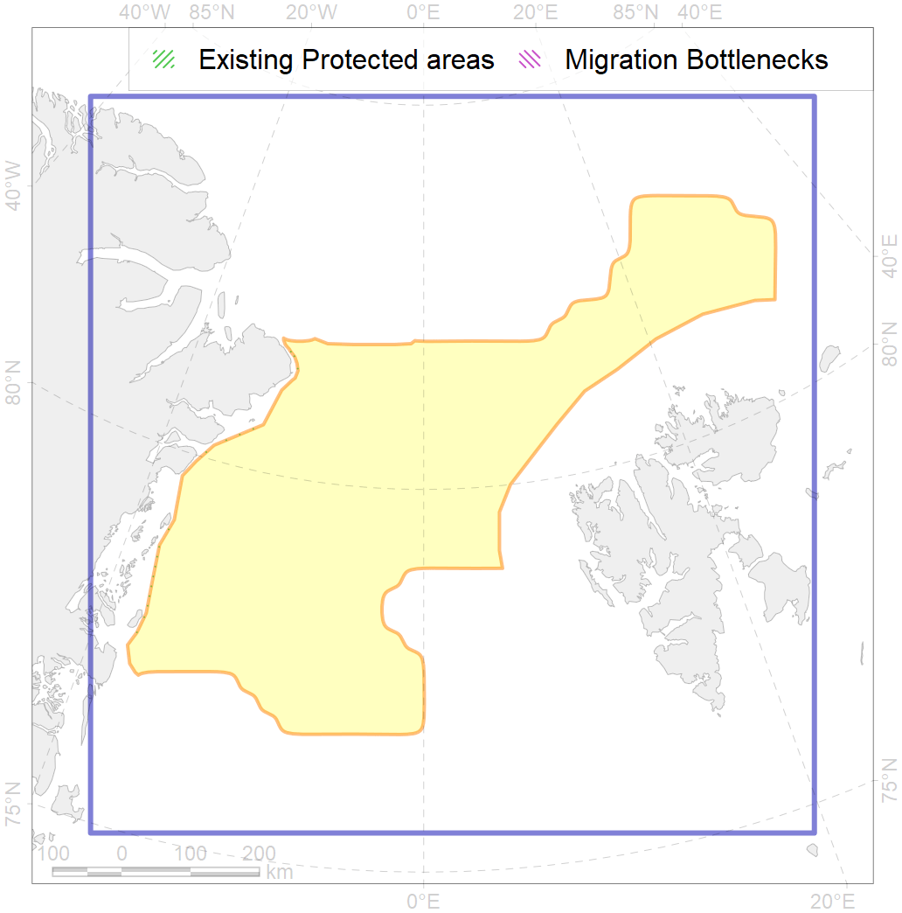

29
Use Accenter to see more details and to make your own research on ArcNet Priority Area for Conservations (PACs).
![[]{style="display: none;"}](rfce3dc6ba.png) 

2
CFs entirely within the PAC area
22
CFs with a quarter of their amount within the PAC area
19
CFs with their targets achieved in the PAC
34
CFs with at least half of their target achieved in the PAC
| CF | Name | Share of the Total Amount within the PAC | Conservation Target | Share of the Target Achievement for the ArcNet | PAC’s Contribution to the Target Achievement |
|---|---|---|---|---|---|
| 7185 | VI.1.2. Terraces | 100.0% | 100.0% | 100.0% | 100.0% |
| 7262 | 7262 I I I 5 1 3 | 100.0% | 70.0% | 142.9% | 100.0% |
| 7195 | VI.2.7. Canyons | 85.4% | 100.0% | 85.4% | 85.4% |
| 3054 | Multiyear Ice distribution in September in the Greenland Sea LME | 74.8% | 18.0% | 407.9% | 78.5% |
| 2059 | Harp seal foraging areas in Greenland as predicted by MIZ distribution | 73.5% | 12.0% | 596.5% | 81.0% |
| 3055 | Multiyear Ice distribution in September in the Barents Sea LME | 47.9% | 18.0% | 237.2% | 78.3% |
| 7190 | VI.2. Gakkel Ridge and Ermak Plateau VI.2.1. Plateaus | 47.3% | 50.0% | 91.7% | 90.8% |
| 3036 | Marginal Ice Zone distribution in July in the Greenland Sea LME | 42.4% | 24.0% | 170.2% | 65.3% |
| 7157 | III.5.1.1. NE Greenland medium and low profile shelf | 36.3% | 6.3% | 572.2% | 53.6% |
| 9006 | polar bear of the EG (East Greenland) subpopulation distribution | 35.5% | 32.4% | 105.7% | 51.1% |
| 5045 | Bowhead whale of the Spitsbergen population core distribution | 34.2% | 74.4% | 44.0% | 44.0% |
| 7156 | III.5.1. Northeast Greenland shelf and slope | 32.7% | 10.2% | 319.4% | 41.6% |
| 7159 | III.5.2. NE Greenland slope | 30.9% | 11.0% | 275.0% | 69.9% |
| 7072 | I.1.2.3. Slope canyons | 30.5% | 25.0% | 107.6% | 77.1% |
| 1004 | Atlantic Walrus Summer Distribution in East Greenland | 28.8% | 33.6% | 84.9% | 41.6% |
| 7158 | III.5.1.2. NE Greenland glacial troughs | 28.4% | 9.0% | 305.5% | 41.2% |
| 7033 | Northern and Eastern Greenland region | 28.2% | 12.2% | 229.3% | 40.7% |
| 2047 | Ringed seal whelping areas in Greenland region | 27.8% | 12.0% | 227.5% | 44.4% |
| 5072 | Narwhal East Greenland stock summer distribution | 26.2% | 48.0% | 54.1% | 34.4% |
| 3122 | polynya Greenland E | 25.4% | 12.0% | 212.0% | 26.4% |
| 7071 | I.1.2.2. Barents - Kara northern slope | 25.2% | 35.0% | 62.4% | 61.7% |
| 7053 | cold corals of the High Arctic | 25.0% | 50.0% | 27.0% | 20.4% |
| 7187 | VI.1.4. Spreading ridge | 25.0% | 25.3% | 98.3% | 56.2% |
| 7025 | Eurasian bathyal region | 24.3% | 10.6% | 217.0% | 58.1% |
| 3007 | Fast Ice distribution in the East Greenland region | 22.9% | 6.0% | 381.1% | 27.1% |
| 7172 | VII.1.2. Abyssal plains | 22.5% | 28.9% | 61.3% | 50.5% |
| 6095 | 6095 PagophileburneEGreenland breeding colonies | 17.7% | 43.2% | 40.1% | 39.1% |
| 6040 | Ivory gull (Pagophila eburnea) postbreeding grounds in the Barents and the Kara Sea | 17.4% | 21.6% | 74.3% | 34.9% |
| 3037 | Marginal Ice Zone distribution in July in the Barents Sea LME | 16.7% | 24.0% | 66.7% | 22.3% |
| 7174 | VII.1.4. Abyssal mountains | 16.0% | 23.5% | 65.6% | 33.4% |
| 1012 | Atlantic Walrus haulouts in East Greenland | 14.3% | 96.0% | 14.9% | 14.3% |
| 2061 | Ringed seal circumpolar foraging areas as predicted by MIZ distribution | 13.7% | 24.0% | 55.2% | 29.0% |
| 7194 | VI.2.6. Rift valleys | 13.7% | 69.0% | 19.7% | 19.6% |
| 2028 | Hooded seal molting areas | 12.9% | 38.4% | 32.4% | 31.3% |
| 7186 | VI.1.3. Ridges | 12.8% | 44.3% | 28.9% | 27.3% |
| 7193 | VI.2.4. Spreading ridges | 11.4% | 28.4% | 40.1% | 25.6% |
| 7014 | Core of Canadian - Greenland Province of Arcto-Atlantic zoogeographical region | 11.0% | 7.4% | 147.9% | 20.5% |
| 3025 | Marginal Ice Zone distribution in April in the Greenland Sea LME | 10.4% | 35.0% | 27.1% | 26.0% |
| 7173 | VII.1.3. Abyssal hills | 9.8% | 14.3% | 59.6% | 19.2% |
| 7070 | I.1.2.1. Barents western slope | 8.3% | 17.0% | 47.7% | 22.5% |
| 6093 | 6093 Little auk breeding colonies of A. alle alle Svalbard | 7.1% | 36.0% | 19.3% | 9.0% |
| 4074 | Fish zoogeography, Arctic Region, High-Arctic Shelf Province, Canadian-Greenland District (10A) | 6.4% | 7.4% | 85.8% | 12.7% |
| 7192 | VI.2.3. Ridges | 5.8% | 52.9% | 10.9% | 10.8% |
| 3033 | Marginal Ice Zone distribution in July in the Northern Canadian Archipelago LME | 5.2% | 24.0% | 21.4% | 13.3% |
| 4032 | Range of the Arctic skate (Amblyraja hyperborea) (F2) | 5.1% | 3.0% | 166.3% | 12.8% |
| 9024 | polar bear denning areas of EG (East Greenland) subpopulation | 5.1% | 64.8% | 7.8% | 7.2% |
| 5037 | Blue whale summer feeding areas in the Northeast Atlantic | 4.1% | 25.2% | 16.4% | 12.4% |
| 5112 | Arctic Cetaceans (beluga, bowhead, narwhal) winter habitats as predicterd by MIZ | 4.1% | 40.0% | 9.5% | 7.8% |
| 7175 | VII.2. Amundsen and Nansen Basins VII.2.1. Rises (slope foot) | 4.0% | 11.9% | 28.3% | 28.0% |
| 7027 | Greenland Sea abyssal region | 4.0% | 15.7% | 21.2% | 21.0% |
| 5046 | Bowhead whale of the Spitsbergen population home range | 3.9% | 18.6% | 17.3% | 17.2% |
| 5051 | Fin whale summer feeding areas in Norway | 3.4% | 26.4% | 12.8% | 9.3% |
| 3031 | Marginal Ice Zone distribution in July in the Central Arctic LME | 3.3% | 24.0% | 13.1% | 13.0% |
| 7017 | Amundsen and Nansen Basins abyssal region | 3.1% | 7.0% | 38.2% | 20.9% |
| 4079 | Fish zoogeography, Arctic Region, Arctic Abyssal Province (11A -Scandian, 11B - Central-Arctic and 11C - Baffin Deep-sea Districts ) | 3.1% | 4.0% | 70.5% | 12.0% |
| 3026 | Marginal Ice Zone distribution in April in the Barents Sea LME | 2.6% | 12.0% | 21.3% | 5.1% |
| 4037 | Distribution of the Glacial cod (Arctogadus glacialis) (F34) | 2.5% | 9.0% | 26.3% | 6.4% |
| 4096 | Range of the Glacial eelpout (Lycodes frigidus) | 2.4% | 6.0% | 36.6% | 9.4% |
| 4090 | Fish zoogeography, Arctic Region, Subarctic Transitional-Atlantic Province, Euro-Asian Bathyal District | 2.2% | 15.9% | 11.8% | 6.5% |
| 5067 | Minke whale feeding areas in the Northeast Atlantic | 2.1% | 12.0% | 17.3% | 5.3% |
| 4041 | Range of the Polar Cod (Boreogadus saida) (F35) | 2.0% | 12.0% | 15.7% | 6.0% |
| 7176 | VII.2.2. Abyssal plains | 1.5% | 8.5% | 12.5% | 12.4% |
| 7177 | VII.2.3. Abyssal hills | 1.4% | 8.6% | 13.3% | 12.5% |